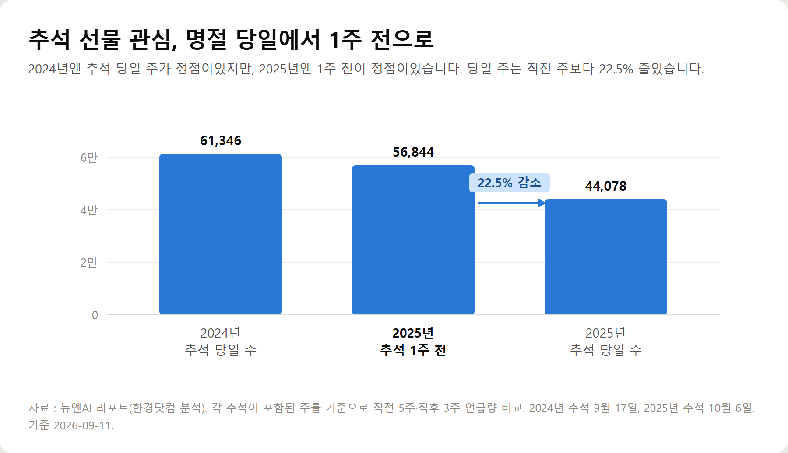
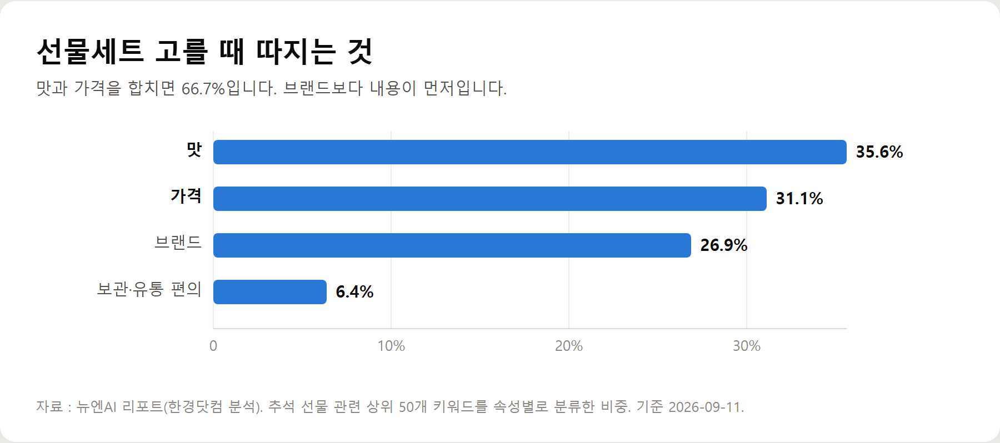
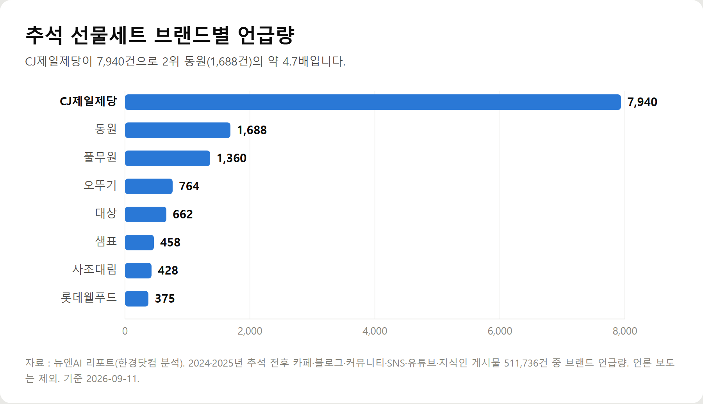
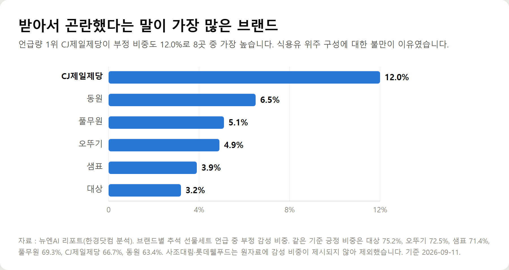

<meta charset="utf-8">
<title>추석 선물세트, 받는 사람이 진짜 반기는 구성 — 나의 투자 그리고 행복한 여행</title>
<meta name="description" content="추석 선물세트 선택 기준을 데이터로 정리했습니다. 선호·비선호 구성, 직거래장터와 온누리상품권 활용법, 과일망·보냉백 분리배출 방법까지.">
<meta name="viewport" content="width=device-width, initial-scale=1">
<link rel="canonical" href="https://danielmoon82.github.io/moon/posts/chuseok-gift-set-2026.html">
<link rel="preconnect" href="https://fonts.googleapis.com">
<link rel="preconnect" href="https://fonts.gstatic.com" crossorigin>
<link rel="stylesheet" href="https://fonts.googleapis.com/css2?family=Hahmlet:wght@400;600;800&family=IBM+Plex+Mono:wght@400;500&family=IBM+Plex+Sans+KR:wght@300;400;500;600&display=swap">

<style>
  :root{
    --paper:#F2EEE6;--surface:#FAF8F3;--surface-2:#E7E1D5;
    --ink:#191510;--ink-2:#4A4235;--ink-3:#7D7364;
    --line:#D6CEBF;--line-soft:#E4DDD0;--accent:#B06A15;--accent-bright:#C2761A;
    --up:#E5484D;--down:#3B82F6;
    --f-display:"Hahmlet",'Nanum Myeongjo',"Apple SD Gothic Neo",serif;
    --f-body:"IBM Plex Sans KR","Apple SD Gothic Neo","Malgun Gothic",sans-serif;
    --f-mono:"IBM Plex Mono","SFMono-Regular",Consolas,monospace;
    --pad:clamp(20px,5vw,64px);
  }
  @media (prefers-color-scheme:dark){
    :root:not([data-theme="light"]){
      --paper:#0B1120;--surface:#121A2C;--surface-2:#1A2439;
      --ink:#E9EEF7;--ink-2:#A9B5C9;--ink-3:#72809A;
      --line:#26314A;--line-soft:#1D2739;--accent:#E8A33D;--accent-bright:#F0B45C;
    }
  }
  *{box-sizing:border-box;}
  body{margin:0;background:var(--paper);color:var(--ink);font-family:var(--f-body);
    font-weight:300;font-size:1rem;line-height:1.75;-webkit-font-smoothing:antialiased;}
  a{color:inherit;}
  img{max-width:100%;height:auto;}
  .wrap{max-width:760px;margin:0 auto;padding-inline:var(--pad);}
  .nav{position:sticky;top:0;z-index:20;background:color-mix(in srgb,var(--paper) 88%,transparent);
    backdrop-filter:saturate(180%) blur(12px);border-bottom:1px solid var(--line);}
  .nav-in{display:flex;align-items:center;justify-content:space-between;height:58px;}
  .brand{font-family:var(--f-display);font-weight:600;font-size:1rem;letter-spacing:-.02em;text-decoration:none;}
  .back{font-family:var(--f-mono);font-size:.72rem;color:var(--ink-3);text-decoration:none;}
  .article{padding-block:clamp(40px,7vw,72px) clamp(56px,9vw,96px);}
  .eyebrow{font-family:var(--f-mono);font-size:.68rem;letter-spacing:.16em;text-transform:uppercase;
    color:var(--accent);margin:0 0 14px;}
  h1{font-family:var(--f-display);font-weight:800;font-size:clamp(1.6rem,4.4vw,2.3rem);
    line-height:1.3;letter-spacing:-.03em;margin:0 0 16px;}
  .byline{font-family:var(--f-mono);font-size:.72rem;color:var(--ink-3);
    padding-bottom:24px;border-bottom:1px solid var(--line);margin-bottom:32px;}
  h2{font-family:var(--f-display);font-weight:600;font-size:1.25rem;letter-spacing:-.02em;margin:42px 0 14px;}
  h3{font-family:var(--f-display);font-weight:600;font-size:1.05rem;letter-spacing:-.02em;
    margin:30px 0 10px;padding-top:14px;border-top:1px solid var(--line-soft);}
  h3 .code{font-family:var(--f-mono);font-size:.7rem;font-weight:400;color:var(--ink-3);margin-left:6px;}
  p{margin:0 0 18px;color:var(--ink-2);}
  ul.checks{margin:0 0 18px;padding-left:20px;color:var(--ink-2);}
  ul.checks li{margin-bottom:8px;font-size:.94rem;}
  table{width:100%;border-collapse:collapse;font-size:.88rem;margin-bottom:8px;}
  th{font-family:var(--f-mono);font-size:.66rem;letter-spacing:.06em;text-transform:uppercase;
    color:var(--ink-3);text-align:right;padding:8px 6px;border-bottom:1px solid var(--line);}
  th:first-child{text-align:left;}
  td{padding:10px 6px;border-bottom:1px solid var(--line-soft);color:var(--ink-2);}
  td.num{font-family:var(--f-mono);text-align:right;font-variant-numeric:tabular-nums;}
  td.up{color:var(--up);} td.down{color:var(--down);}
  .scroll{overflow-x:auto;}
  figure{margin:22px 0;}
  figure img{display:block;border-radius:3px;background:var(--surface-2);}
  figcaption{margin-top:8px;font-family:var(--f-mono);font-size:.68rem;color:var(--ink-3);text-align:center;}
  .note{margin-top:34px;padding:16px 18px;border-left:3px solid var(--accent);
    background:var(--surface);border-radius:0 3px 3px 0;}
  .note p{margin:0;font-size:.85rem;color:var(--ink-3);}
  .foot{border-top:1px solid var(--line);background:var(--surface);padding-block:30px 38px;}
  .foot p{margin:0;font-size:.8rem;color:var(--ink-3);}
</style>

<nav class="nav">
  <div class="wrap nav-in">
    <a class="brand" href="../index.html">나의 투자 그리고 행복한 여행</a>
    <a class="back" href="../index.html#stocks">← 시황으로</a>
  </div>
</nav>

<main class="wrap article">
  <p class="eyebrow">Market</p>
  <h1>추석 선물세트 선호 구성과 포장재 분리배출 정리 (2026-09-12 기준)</h1>
  <p class="byline">생활 · 2026-09-11 기준</p>

  <p>한 줄 요약: 추석 선물 관련 게시물 511,736건 분석 결과 선택 기준은 맛 35.6% + 가격 31.1% = 66.7%, 브랜드 26.9%, 보관·유통 편의 6.4%. 브랜드 언급량은 CJ제일제당 7,940건, 동원 1,688건, 풀무원 1,360건, 오뚜기 764건, 대상 662건, 샘표 458건, 사조대림 428건, 롯데웰푸드 375건. 부정 언급 비중은 CJ제일제당 12.0%(최고), 대상 3.2%(최저). 관심 정점은 2024년 추석 당일 주(61,346건)에서 2025년 추석 1주 전(56,844건)으로 이동. 2026년 추석은 9월 25일(금).</p>
  <p>이 글은 뉴엔AI 리포트(한경닷컴 분석)와 2026-09-11~12 보도, 지자체 공개 일정에서 확인 가능한 값만 모아 정리한 기록입니다. 특정 브랜드를 권하거나 깎는 목적이 아닙니다.</p>
  <h2>1. 지금 무슨 일이 벌어지고 있나 — 관심이 1주 앞으로 당겨졌다</h2>
  <figure><figcaption>추석 선물 주간 언급량 비교 (2024년·2025년 추석, 단위: 건)</figcaption></figure>
  <p>먼저 타이밍입니다. 선물을 언제 고르는지가 최근 2년 사이 바뀌었습니다.</p>
  <ul class="checks">
    <li>2024년 추석(9월 17일) — 추석 당일이 포함된 주에 61,346건으로 정점</li>
    <li>2025년 추석(10월 6일) — 추석 1주 전에 56,844건으로 정점</li>
    <li>2025년 추석 당일 주 — 44,078건으로 직전 주보다 22.5% 감소</li>
  </ul>
  <p>분석을 맡은 뉴엔AI는 이유를 세 가지로 봤습니다. 황금연휴, 택배 조기 마감, 그리고 유통사가 사전예약 기간을 40일로 늘린 영향입니다.</p>
  <p>실무적으로는 이렇게 읽으면 됩니다. 2026년 추석은 9월 25일 금요일이니, 비교하고 결정하는 구간은 9월 둘째 주에서 셋째 주입니다. 이 글을 읽는 시점이 바로 그 구간입니다.</p>
  <div class="note"><p>명절 당일에 가까워질수록 선택권이 줄어듭니다. 인기 구성은 먼저 빠지고, 배송은 마감되고, 할인 행사는 재고 위주로 남습니다.</p></div>
  <h2>2. 사람들은 선물세트에서 뭘 보나 — 맛과 가격이 66.7%</h2>
  <figure><figcaption>추석 선물세트 선택 기준 비중 (상위 50개 키워드 분류, 단위: %)</figcaption></figure>
  <p>상위 50개 키워드를 속성별로 분류한 결과입니다.</p>
  <ul class="checks">
    <li>맛 — 35.6%</li>
    <li>가격 — 31.1%</li>
    <li>브랜드 — 26.9%</li>
    <li>보관·유통 편의 — 6.4%</li>
  </ul>
  <p>맛과 가격을 합치면 66.7%입니다. 브랜드를 아예 안 보는 건 아니지만, 상자 겉면보다 안에 든 것을 먼저 따진다는 뜻입니다.</p>
  <p>뉴엔AI는 이 흐름을 "비용 부담은 덜면서도 성의를 전달할 수 있는 구성을 선호"한다고 정리했습니다. 값을 올려서 성의를 표현하는 방식이 잘 통하지 않는다는 이야기입니다.</p>
  <h2>3. 브랜드별 언급량 — CJ제일제당이 2위의 4.7배</h2>
  <figure><figcaption>추석 선물세트 브랜드별 언급량 (단위: 건)</figcaption></figure>
  <p>언급량은 곧 화제성입니다. 순서는 이렇습니다.</p>
  <ul class="checks">
    <li>CJ제일제당 7,940건</li>
    <li>동원 1,688건</li>
    <li>풀무원 1,360건</li>
    <li>오뚜기 764건</li>
    <li>대상 662건</li>
    <li>샘표 458건</li>
    <li>사조대림 428건</li>
    <li>롯데웰푸드 375건</li>
  </ul>
  <p>브랜드 두 곳이 한 글에서 함께 언급된 조합 중 가장 많았던 건 CJ제일제당과 동원으로 876건이었습니다. 스팸과 참치 중 어느 쪽이 더 요긴한지를 따진 결과입니다.</p>
  <p>이 비교에서 소비자들은 참치캔 쪽에 실용성 점수를 더 줬습니다. "김치찌개, 볶음밥, 샐러드 어디든 다 들어간다"는 반응이었습니다.</p>
  <p>풀무원은 결이 달랐습니다. 식물성 대체육과 국산 참기름·들기름의 건강 이미지가 강점으로 꼽혔고, CJ제일제당과 함께 언급된 건수가 563건, 오뚜기와 517건, 동원과 398건이었습니다. 다만 구성이 다양하지 못하다는 지적이 따라붙었습니다.</p>
  <h2>4. 이 글의 핵심 — '받아서 곤란한 선물'을 거꾸로 피하는 법</h2>
  <figure><figcaption>브랜드별 부정 언급 비중 (단위: %)</figcaption></figure>
  <p>추천 목록은 어디에나 있습니다. 실제로 도움이 되는 건 반대쪽 데이터입니다.</p>
  <p>언급량 1위 CJ제일제당은 긍정 비중이 66.7%였지만 부정도 12.0%로 8곳 중 가장 높았습니다. 이유는 하나로 모였습니다. 선호하지 않는 식용유 위주 구성입니다.</p>
  <div class="note"><p>"선물세트에 카놀라유나 해바라기유만 잔뜩 들어있는 구성은 평소에 잘 안 먹어서 팬트리에 쌓인다."</p></div>
  <p>같은 브랜드라도 스팸 복합세트에 대한 반응은 정반대였습니다. "호불호 안 갈리고 쟁여두면 1년 내내 밥반찬이나 찌개용으로 다 먹는다"였습니다.</p>
  <p>나머지 브랜드의 부정 비중은 동원 6.5%, 풀무원 5.1%, 오뚜기 4.9%, 샘표 3.9%, 대상 3.2% 순이었습니다. 긍정 비중은 대상 75.2%, 오뚜기 72.5%, 샘표 71.4%, 풀무원 69.3%였습니다.</p>
  <p>부정 비중이 가장 낮은 대상의 평가를 보면 기준이 분명해집니다.</p>
  <div class="note"><p>"배달 음식보다 집밥을 매일 해 먹는 주부 입장에선 햄만 든 세트보다 청정원 복합세트가 훨씬 실용적이다."</p></div>
  <p>정리하면 만족도를 가르는 건 브랜드도 가격도 아니라 **회전율**입니다. 한 달에 한 번이라도 손이 가는 물건인지가 기준입니다.</p>
  <p>그래서 세 가지만 확인하면 실패가 크게 줄어듭니다.</p>
  <ul class="checks">
    <li>단일 품목만 많이 든 구성보다 복합 구성 — 같은 것이 반복되면 부담이 됩니다. 동원도 '참치캔이 쌓인다'는 불만이 적지 않았습니다</li>
    <li>받는 집의 식사 형태 — 집밥 위주면 조미료·장류 복합세트, 배달 위주면 바로 먹는 가공식품 쪽이 회전이 빠릅니다</li>
    <li>평소 쓰는 브랜드인지 — 오뚜기 참기름과 샘표 연두처럼, 익숙한 제품이면 긍정 평가가 높고 안 쓰던 제품이면 방치됩니다</li>
  </ul>
  <h2>5. 성수품 값 낮추는 방법 — 직거래장터와 온누리상품권</h2>
  <p>선물세트만 돈이 드는 게 아닙니다. 상차림 비용도 함께 오릅니다.</p>
  <p>2026년 9월 보도 기준으로 산적이나 국에 쓰는 한우가 1년 전보다 3% 넘게 올랐고, 갈치·오징어 같은 수산물도 가격이 뛰었습니다. 수입산 부채살은 100g당 2,200원에서 2,700원으로 올랐다는 소비자 증언이 나왔습니다.</p>
  <p>정부는 9월 3일부터 농축수산물 할인 지원을 시작했고, 추석이 끝난 뒤에도 9월 내내 할인을 이어간다고 밝혔습니다. 추석 연휴 직전인 9월 23일까지는 성수품 가격 조사가 매일 진행됩니다.</p>
  <p>체감 효과가 가장 큰 건 지자체 직거래장터입니다. 서울 자치구들이 9월 15일부터 17일 사이에 엽니다.</p>
  <ul class="checks">
    <li>구로구 — 9월 16~17일 구청 광장. 41개 지자체·53개 농가 참여, 한우·굴비·과일·젓갈·한과·전통주 등 250여 품목</li>
    <li>강남구 — 9월 16일 구청 주차장. 40여 개 지자체·80여 개 생산농가, 60개 부스. 현장 구매분 전국 배송 가능</li>
    <li>동대문구 — 9월 16일 구청 앞 광장. 15개 자매도시가 추천한 27개 생산자 단체, 142개 품목 (청송 사과, 나주 배, 남해 멸치, 춘천 닭갈비 등)</li>
    <li>중구 — 9월 15~16일 구청 앞 광장. 15개 자매·협력도시 참여, 120여 품목을 시중보다 최대 50% 저렴하게 판매</li>
  </ul>
  <p>중구는 전통시장 환급 행사도 함께 합니다. 9월 16일부터 20일까지 신중부시장과 남대문시장에서 농·축·수산물 구매액의 30%를 온누리상품권으로 환급합니다.</p>
  <p>직거래장터는 유통 마진이 빠지는 구조라 할인 행사와 성격이 다릅니다. 다만 현장 판매라 품목별 재고 편차가 크니, 꼭 필요한 품목이 있으면 오전에 가는 편이 낫습니다.</p>
  <h2>6. 명절 급전은 조심 — 연 60% 넘는 대부계약은 무효</h2>
  <p>돈 이야기를 하는 글이니 이 부분을 빼면 안 됩니다.</p>
  <p>금융위원회는 9월 11일 추석 연휴 불법사금융 피해 예방 안내를 내놨습니다. 차례상 비용과 귀성 경비로 급전 수요가 늘어나는 시기를 노려 '당일 대출', '무서류·무담보' 광고가 늘어난다는 이유입니다.</p>
  <p>연휴에는 은행 영업이 제한되니 위험이 더 커집니다. 대표적인 불법 수법은 이렇습니다.</p>
  <ul class="checks">
    <li>연 20%를 초과하는 이자 요구</li>
    <li>대출 실행 전 수수료·보증금·선이자 입금 요구</li>
    <li>가족 연락처나 신분증 사진 등 과도한 개인정보 요구</li>
  </ul>
  <p>알아둘 조항이 하나 있습니다. 개정 대부업법에 따라 **연이율 60%를 초과하는 대부계약은 원금과 이자 모두 무효**입니다. 이미 원리금을 갚았더라도 반환을 요구할 수 있습니다.</p>
  <p>급전이 필요하면 먼저 서민금융진흥원의 정책서민금융상품을 확인하는 편이 낫습니다. 햇살론과 불법사금융예방대출 같은 저금리 상품을 홈페이지·앱·전화 상담으로 조회할 수 있습니다.</p>
  <p>대부업체를 이용해야 한다면 금융감독원의 '등록대부업체 통합조회'로 등록 여부를 먼저 확인하세요. 등록번호와 주소가 표시되지 않은 SNS·문자 광고는 불법일 가능성이 높습니다.</p>
  <p>피해를 입었다면 문자, 카카오톡 대화, 송금 내역, 통화 녹음을 보관해 두는 것이 중요합니다. 정부는 2026년 3월부터 '불법사금융 원스톱 지원시스템'을 운영하고 있어, 금감원 홈페이지 온라인 신고나 신용회복위원회 콜센터, 전국 서민금융통합지원센터로 상담과 피해구제를 받을 수 있습니다.</p>
  <h2>7. 연휴 뒤에 남는 것 — 선물세트 포장재 분리배출</h2>
  <p>명절이 지나면 분리수거장이 막힙니다. 가장 많이 틀리는 것부터 정리합니다.</p>
  <p>결론부터 말하면, 재활용될 것처럼 생겼는데 아닌 품목이 많습니다.</p>
  <ul class="checks">
    <li>과일망(완충재) — 종량제 봉투. 스티로폼처럼 보이지만 부피 대비 너무 가벼워 선별 기계에서 탈락합니다. 색상과 무관합니다</li>
    <li>고급 과일 바구니 — 종량제 봉투. 등나무처럼 보여도 형태 유지를 위해 합성수지를 섞은 복합 재질이 대부분입니다. 부숴서 담습니다</li>
    <li>명절 보자기·은박 보냉백 — 종량제 봉투. 섬유류·부직포 가방도 재활용이 안 됩니다</li>
    <li>젤 아이스팩 — 자르지 말고 통째로 종량제 봉투. 고흡수성수지가 들어 있습니다</li>
    <li>물 아이스팩 — 가위로 잘라 물은 하수구에, 포장지는 비닐류로 배출</li>
    <li>통조림 받침대(트레이) — 뒷면 분리배출 마크 확인. 요즘은 계란판처럼 종이 펄프로 만든 것이 섞여 나옵니다</li>
    <li>스티로폼 상자 — 테이프와 택배 송장 스티커를 완전히 제거한 뒤 재활용으로 배출</li>
    <li>선물세트 상자·택배 상자 — 운송장과 테이프를 떼고 펼쳐서 납작하게 종이류로 배출</li>
  </ul>
  <p>플라스틱 포장 용기는 내용물을 비우고 물로 헹군 뒤 배출합니다. '도포·접합' 표시가 있는 포장재는 분리배출이 아니라 종량제 봉투입니다.</p>
  <p>분리배출 4대 원칙은 비우고, 헹구고, 분리하고, 섞지 않는 것입니다. 이물질을 비우고 씻은 뒤 재질별로 나눠 섞이지 않게 배출하면 됩니다.</p>
  <p>참고로 보냉가방은 버리지 않고 돈으로 바꿀 수 있는 경우가 있습니다. 광주신세계는 2026년 2월 설 명절에 보냉가방을 반납하면 5,000원 이상 구매 시 쓸 수 있는 5,000원 교환바우처를 주는 회수 캠페인을 진행했습니다. 사용기한은 발급일로부터 30일이었고, 회수된 가방은 협동조합을 통해 업사이클링됐습니다.</p>
  <p>추석에도 같은 캠페인이 열릴지는 확정되지 않았습니다. 다만 백화점에서 한우·수산물 세트를 받았다면 버리기 전에 해당 점포의 교환·환불 데스크에 문의해 볼 가치가 있습니다.</p>
  <h2>8. 선물 고르기 전 체크리스트 5개</h2>
  <ul class="checks">
    <li>받는 집이 집밥 위주인지 배달 위주인지 — 회전이 빠른 쪽을 고릅니다</li>
    <li>단일 품목 대량 구성인지 복합 구성인지 — 같은 것이 반복되면 쌓입니다</li>
    <li>식용유 비중이 과한 구성은 아닌지 — 데이터상 불만이 가장 많았던 지점입니다</li>
    <li>9월 셋째 주 안에 결정했는지 — 인기 구성은 먼저 빠지고 배송도 마감됩니다</li>
    <li>직거래장터·온누리상품권 환급 일정과 겹치는지 — 같은 예산으로 양을 늘릴 수 있습니다</li>
  </ul>
  <h2>9. 이런 경우엔 이렇게</h2>
  <p>상황별로 정리하면 선택이 빨라집니다.</p>
  <ul class="checks">
    <li>집밥을 자주 하는 어른께 — 조미료·장류 복합세트. 부정 비중이 가장 낮았던 유형입니다</li>
    <li>1~2인 가구나 자취하는 친척에게 — 바로 먹을 수 있는 가공식품 복합세트. 대용량 오일류는 보관이 부담입니다</li>
    <li>건강을 챙기는 분께 — 국산 참기름·들기름이나 식물성 대체육 쪽. 다만 구성 종류가 적은 편입니다</li>
    <li>취향을 전혀 모를 때 — 호불호가 가장 적게 갈린다고 언급된 스팸 복합세트나 참치 복합세트</li>
    <li>매년 같은 분께 드릴 때 — 지난해와 같은 품목은 피합니다. 반복 수령이 불만의 주된 이유였습니다</li>
  </ul>
  <h2>자주 묻는 질문</h2>
  <p>Q. 2026년 추석은 언제인가요?</p>
  <p>A. 9월 25일 금요일입니다. 성수품 가격 조사는 연휴 직전인 9월 23일까지 매일 진행됩니다.</p>
  <p>Q. 선물세트는 언제 사는 게 좋나요?</p>
  <p>A. 데이터상 관심 정점이 추석 1주 전으로 옮겨졌습니다. 유통사 사전예약 기간이 40일로 늘어난 영향입니다. 9월 둘째~셋째 주에 비교하고 결정하는 흐름이 가장 일반적입니다.</p>
  <p>Q. 가장 무난한 선물세트는 무엇인가요?</p>
  <p>A. 데이터로만 보면 부정 언급 비중이 낮은 조미료·장류 복합세트(대상 3.2%)와, 호불호가 적다고 언급된 스팸·참치 복합세트입니다. 반대로 불만이 가장 많았던 건 식용유 위주 구성이었습니다.</p>
  <p>Q. 과일망과 보냉백은 재활용되나요?</p>
  <p>A. 둘 다 안 됩니다. 과일망은 부피 대비 너무 가벼워 선별 과정에서 탈락하고, 은박 보냉백과 부직포 가방은 섬유·복합 재질이라 종량제 봉투에 버려야 합니다.</p>
  <p>Q. 명절에 급전이 필요하면 어디를 봐야 하나요?</p>
  <p>A. 서민금융진흥원의 햇살론·불법사금융예방대출을 먼저 확인하세요. 대부업체는 금융감독원 '등록대부업체 통합조회'로 등록 여부를 확인해야 하며, 연 60%를 초과하는 대부계약은 원금과 이자 모두 무효입니다.</p>
  <h2>정리하면</h2>
  <ul class="checks">
    <li>선택 기준은 맛 35.6% + 가격 31.1% = 66.7%로, 브랜드(26.9%)보다 내용이 먼저입니다</li>
    <li>언급량 1위 CJ제일제당(7,940건)이 부정 비중도 12.0%로 가장 높았고, 이유는 식용유 위주 구성이었습니다</li>
    <li>부정 비중이 가장 낮은 건 대상(3.2%)이었고, 이유는 '매일 쓰는 기초 조미료'라는 실용성이었습니다</li>
    <li>관심 정점은 추석 당일 주에서 1주 전으로 옮겨졌습니다 — 9월 셋째 주가 결정 구간입니다</li>
    <li>성수품은 9월 15~17일 자치구 직거래장터(중구는 최대 50% 저렴)와 온누리상품권 30% 환급을 활용할 수 있습니다</li>
    <li>연휴 뒤 과일망·고급 바구니·보자기·은박 보냉백·젤 아이스팩은 모두 종량제 봉투입니다</li>
  </ul>
  <p>선물의 만족도는 값이 아니라 회전율에서 갈립니다. 한 달에 한 번이라도 손이 가는 물건인지만 확인하면 크게 실패하지 않습니다.</p>
  <p style="font-size:12px;color:#999;line-height:1.6;margin-top:36px">이 글의 수치는 뉴엔AI 리포트(한경닷컴 분석, 2024·2025년 추석 전후 게시물 511,736건)와 2026년 9월 11~12일 보도, 지자체가 공개한 행사 일정에서 가져왔습니다. 기준 시점 2026년 9월 12일. 성수품 가격과 행사 일정·혜택은 변동될 수 있으니 방문 전 해당 지자체와 점포에 확인해 주세요. 보냉가방 회수 캠페인은 2026년 2월 설 명절 사례이며, 추석 시행 여부는 확정되지 않았습니다. 특정 브랜드를 권하거나 깎으려는 의도는 없습니다.</p>
</main>

<footer class="foot">
  <div class="wrap"><p>나의 투자 그리고 행복한 여행 · 투자 판단의 참고 자료일 뿐, 매수·매도를 권유하지 않습니다.</p></div>
</footer>
